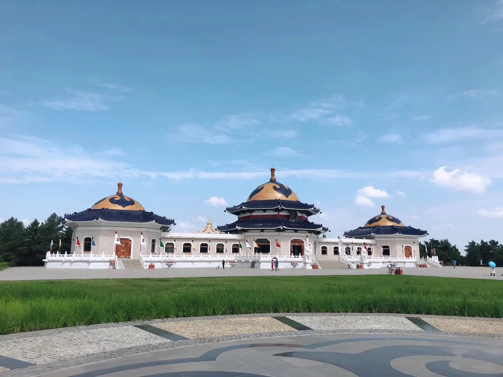

CITY 05 / 12 · TONGLIAO
通辽通辽市 · 科尔沁
西辽河冲积出科尔沁草原，也冲积出说书人的四胡、安代舞的踏步与版画上的刀痕。
5.95 万 km²面积
约 287 万常住人口
22 处必游点位
3 项非遗项目
科尔沁
CITY PORTRAIT
通辽位于内蒙古东部、科尔沁草原腹地，西辽河与教来河在这里冲积出大片沙地草原。它是孝庄文皇后的故乡，也是安代舞、乌力格尔与科尔沁版画的流传地。
通辽的景观不以奇崛取胜，而以辽阔与叙事见长：大青沟在沙地里藏着一道深绿，珠日河的草浪一直铺到天边，库伦的寺庙与荞面则保留了更慢的生活节奏。
科尔沁草原孝庄故里安代之乡
MUST SEE
必游景点
22 处点位，覆盖通辽最值得走进去的自然与人文现场。点击任意一张卡片，展开完整讲解与研学提示。
LIVING HERITAGE
非遗图谱
从音乐、舞蹈到技艺与民俗。这里的每一项都不是“表演给游客看”的节目，而是仍在被传承的生活。
TASTE OF PLACE
在地风物
一座城的味道，往往比景点更接近日常。以下四样，是通辽餐桌上最常见的坐标。
通辽牛肉干
风干慢烤，越嚼越香
库伦荞面
荞麦饸饹，配羊肉卤
蒙古馅饼
皮薄馅大，汁水丰盈
炒米
糜子炒制，配奶茶
ONE DAY ROUTE
两日科尔沁 · 沟谷与叙事
把上面的点位按时间排成一条线。不必严格照表，按你的节奏删减一站，也是一种走法。
D1 09:00
大青沟
在沙地深处的森林里走栈道，午后前往库伦。
D1 15:00
库伦三大寺
看三寺建筑，晚饭吃一碗库伦荞面。
D2 09:00
孝庄园
补上清初科尔沁与孝庄的历史线索。
D2 15:00
宝古图沙漠
在奈曼旗等一场沙地日落。
路线提示 · 通辽东西跨度大，大青沟、库伦在南部，孝庄园在中部，宝古图在西南；建议以通辽市区或甘旗卡为落脚点分线游玩。
